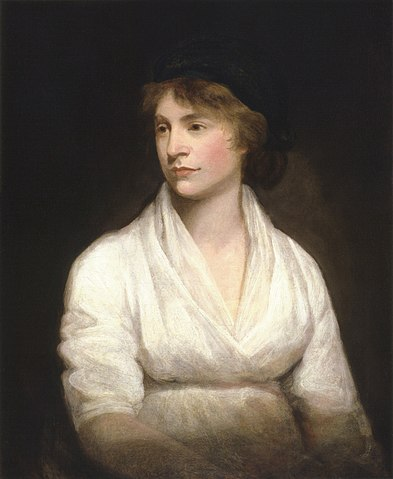

정치 분야 위인

메리 울스톤크래프트 (Mary Wollstonecraft)
- 분야
- 정치
- 출생 및
사망 - 출생 > 1759년 4월 27일
사망 > 1797년 9월 10일 - 업적 요약
- 여성운동의 선구자이며, 최초의 페미니즘 선언서 "여성의 권리 옹호"를 저술하였다.
- 업적 상세
-
울스턴크래프트는 지위는 있지만 가난한 여성에게 허락된 직업선택의 폭이 좁음에 불만을 품었다.
혁명기 프랑스에서 울스턴크래프트는 최근 저작인 '인간의 권리 옹호'로 인해 다소 유명해져 있었다.
'인간의 권리 옹호'는 프랑스 혁명을 보수적 논조로 비난한 '프랑스 혁명의 성찰'에 대한 답서로 쓰인 것이었으며, 이를 통해 울스턴크래프트의 이름이 하룻밤 새 널리 알려졌다.
울스턴크래프트는 '인간의 권리 옹호'에서 개요를 갖춘 사상들을 계속 밀어붙여 그의 가장 유명하고 영향력 있는 작품 '여성의 권리 옹호'를 저술했다.
울스턴크래프트는 그가 지지했던 과격파 결사단들이 프랑스 여성들에게 남성들과 동등한 권리를 부여하기를 거부하고, 그들의 우상인 루소의 이상적 여성상인 남성을 보조하는 존재로 여성의 역할을 규정한 것에 실망했다.
사후 19세기에는 울스턴크래프트의 비판자들이 분별 있는 여성이라면 울스턴크래프트의 글을 읽지 말아야 한다고 암시하거나 대놓고 주장했기에 그의 저작들이 거의 읽히지 못했다.
영국의 여성선거권 운동이 일어나면서 울스턴크래프트는 본격적으로 재발굴되었다.
울스턴크래프트의 과거 연인에게 보내는 편지들을 복간하면서 울스턴크래프트의 복권을 시도한 것이 그 최초였다.
1892년에는 '여성의 권리 옹호 100주년 기념판이 나왔고 서프러지스트(여성선거권 운동 온건파)이자 전국여성선거권운동단체연합 총재가 그 서문을 썼다.
이 서문에서 총재는 울스턴크래프트의 오명을 세탁하고 울스턴크래프트가 선거권 요구운동의 선구자라고 주장했다.
1898년이 되자 울스턴크래프트를 주제로 한 박사논문과 단행본이 나오게 되었다.
1979년의 여성주의 설치미술 작품 '디너파티'에 울스턴크래프트에게 바쳐진 자리도 있었다.
울스턴크래프트는 오늘날까지 심지어 학계 밖에서도 영향을 미치고 있다.